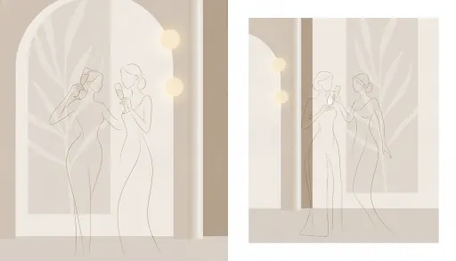

Mas de Can Riera
El Convite
Y como no podia ser de otra manera, después de la ceremonia estaremos encantados de poderos dar la mejor experiencia en el Mas de Can Riera.

Horarios
Los horarios pueden estar sujetos a variación.
Información de interés
-
local_parking
El Mas de Can Riera dispone de parking privado gratuito para todos aquellos invitados que utilicen el servicio de autocar.
-
child_care
Se habilitará una sala especial para todos aquellos invitados que asistan con bebés, para tener un espacio confortable.
-
gavel
Se deberá de respetar las normas del espacio.
-
restaurant
Todos aquellos invitados con alergias, intolerancias, etc... nada más llegar, deberán de dirigirse a cualquiera de los empleados de la finca y notificarlos. Dicho personal estará informado préviamente.
Cómo llegar
Dirección
Cami de Can Riera, s/n, 08184 Palau-solità i Plegamans, Barcelona